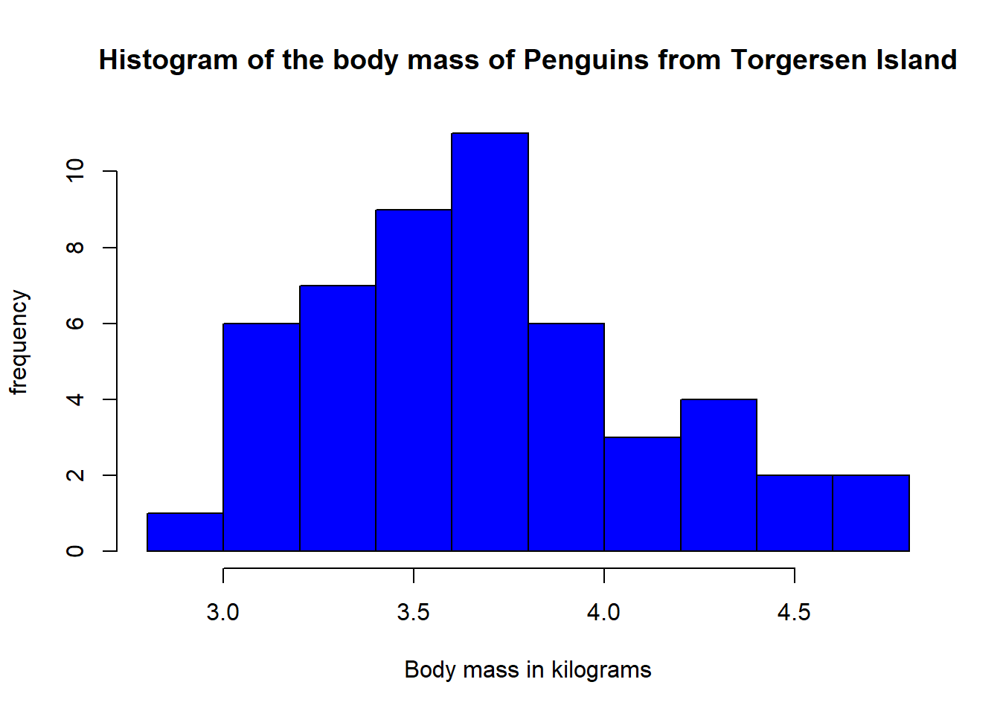
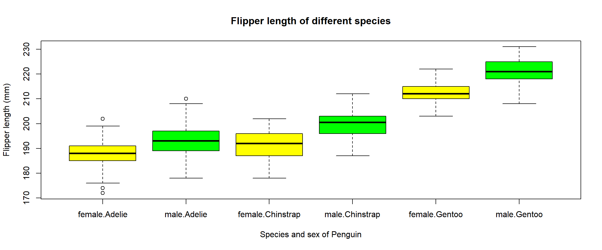

Chapter 16 Plots solutions

16.1 Line graph solution
Below is the code and the plot:
#Produce the plot with vectors created inside the function
plot(x = rep(1:10, 2),
y = seq(from = 0.5, to = 10, by = 0.5),
col = "red",
main = 'A line graph with "red" as the colour',
type = "l")
16.2 Histogram solution
Below is the code and the plot:
#Create data frame with only the Penguins from Torgersen
penguins_torgensen_df <- penguin_df[penguin_df$island == "Torgersen",]
#Create a column with body mass in kilograms
penguins_torgensen_df$body_mass_kg <-
penguins_torgensen_df$body_mass_g / 1000
#Plot the histogram
hist(penguins_torgensen_df$body_mass_kg,
main = "Histogram of the body mass of Penguins from Torgersen Island",
xlab = "Body mass in kilograms",
ylab = "frequency",
col = "blue")
16.3 Scatterplot solution
Below is the code and the plot:
#Create data frame with only the Penguins from 2009
penguin_2009_df <- penguin_df[penguin_df$year == "2009",]
#Produce plot
plot(x = penguin_2009_df$bill_length_mm,
y = penguin_2009_df$bill_depth_mm,
col = as.numeric(penguin_2009_df$species),
main = "Penguin bills vs depth in 2009",
xlab = "Bill length (mm)",
ylab = "Bill depth (mm)",
pch = 15)
#Create legend
legend(x = "bottomleft",
col = 1:nlevels(penguin_2009_df$species),
legend = levels(penguin_2009_df$species),
pch = 15)
To save the plot the code is:
#Create data frame with only the Penguins from 2009
penguin_2009_df <- penguin_df[penguin_df$year == "2009",]
#Start png function
png(filename = "Chapter_13-16/Penguins_2009_bill_depth_vs_length_scatterplot.png",
units = "mm", height = 250, width = 250, res = 150 )
#Produce plot
plot(x = penguin_2009_df$bill_length_mm,
y = penguin_2009_df$bill_depth_mm,
col = as.numeric(penguin_2009_df$species),
main = "Penguin bills vs depth in 2009",
xlab = "Bill length (mm)",
ylab = "Bill depth (mm)",
pch = 15)
#Create legend
legend(x = "bottomleft",
col = 1:nlevels(penguin_2009_df$species),
legend = levels(penguin_2009_df$species),
pch = 15)
#Save file
dev.off()16.4 Boxplot solutions
Below is the code and the plot:
#Produce boxplot
boxplot(flipper_length_mm~sex*species,
data = penguin_df,
col = c("yellow","green"),
main = "Flipper length of different species",
xlab = "Species and sex of Penguin",
ylab = "Flipper length (mm)"
)
To save the plot the code is:
#Start png function
jpeg(filename = "Chapter_13-16/Penguins_species_and_flipper_length_boxplot.jpg",
units = "mm", height = 250, width = 300, res = 150 )
#Produce boxplot
boxplot(flipper_length_mm~sex*species,
data = penguin_df,
col = c("yellow","green"),
main = "Flipper length of different species",
xlab = "Species and sex of Penguin",
ylab = "Flipper length (mm)"
)
#Save file
dev.off()